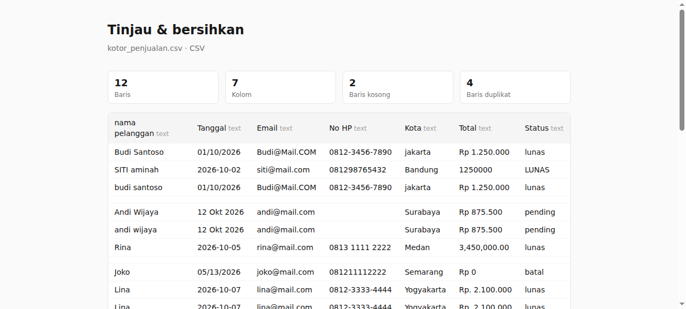
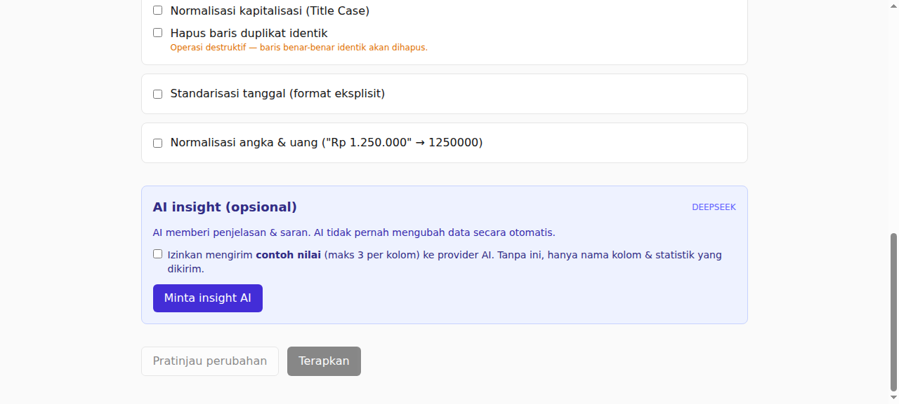

File kotor masuk, workbook rapi keluar.
CleanScript membaca file Excel/CSV yang dibuat manusia — judul di atas header, tanggal campur aduk, CSV titik-koma — lalu mengeluarkan data bersih plus daftar hal yang tidak bisa diperbaiki otomatis.
Kelihatan rapi di Excel, isinya belum tentu.
Pemilik usaha mengirim file yang terlihat wajar di Excel. Di dalamnya: tanggal yang setengahnya teks, angka dengan “Rp” dan titik ribuan, baris judul di atas header, dan kolom yang isinya campur antara nilai dan #REF!.
Membersihkan manual butuh 30–60 menit per file — dan hasilnya tidak bisa diaudit. Kalau ada satu baris hilang, tidak ada yang tahu.
Yang saya jaga: setiap perubahan harus bisa ditunjuk balik ke baris asalnya. Cepat tapi tidak bisa dilacak, buat saya belum selesai.
Tiga keputusan yang menentukan bentuk aplikasi
- Deteksi format, bukan menebak Parser mendukung 21 format tanggal: nama bulan Indonesia (termasuk Peb, Agt, Nop), nama hari, format ringkas YYYYMMDD, serial Excel 20000–60000, dan ISO+Z yang dipaksa year-first supaya 2026-10-12T08:15:30Z tidak terbaca Desember.
- Sampling 200 nilai, bukan seluruh file Deteksi kolom angka memakai sampel. Efeknya pada file 5.000 × 20: inspeksi 7,8 detik → 4,5 detik. Placeholder seperti #REF!, -, N/A tidak dihitung sebagai “bukan angka”, supaya satu kolom uang yang punya 3 sel rusak tetap terdeteksi sebagai uang.
- Audit, bukan hapus diam-diam Baris bermasalah tidak dibuang. Ia masuk sheet keempat — Data_Perlu_Dicek — berisi lokasi baris, kolom, nilai asli, dan jenis masalahnya. Tanggal mustahil seperti 31/02/2026 dibiarkan apa adanya dengan tanda, bukan dikoreksi tanpa izin.
Hasil pada file terburuk yang saya punya
File 5.000 baris × 20 kolom, campuran tanggal rusak, angka berformat, dan sel error.


Yang masih belum beres
Nomor HP belum diseragamkan. Kolom nomor telepon keluar apa adanya — 0812-3456-7890, 081298765432, 0813 1111 2222 tetap berbeda-beda. Padahal itu kolom yang paling sering mau dipakai untuk kirim WhatsApp massal.
Jam rusak membuang tanggal valid. 2026-10-12 25:99 tetap jadi 2026-10-12, tapi penanda jamnya hilang tanpa catatan.
File 10 MB ke atas. Di atas 5.000 baris, waktu proses mulai terasa; target berikutnya adalah pemrosesan bertahap, bukan sekaligus.
Ada file yang tiap bulan harus dirapikan manual?
Kirim satu contoh file — saya balas dengan perkiraan apakah bisa diotomasi, dan berapa lama prosesnya.